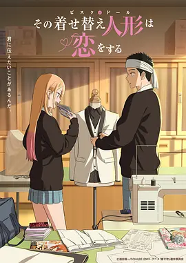

8.8
更衣人偶坠入爱河 第二季
My Dress-Up Darling Season 2
2025
日本
评分 8.8
导演:
筱原启辅
演员:
直田姬奈 / 石毛翔弥 / 种崎敦美 / 羊宫妃那 / 斧笃
类型:
剧情,爱情
剧情简介
新菜的工作台上仍摆着量尺、布样与半成品的娃娃配件，而海梦又一次带着兴奋冲进他的日常。和第一季相比，两人已经建立了更自然的默契：海梦毫不犹豫地提出天马行空的新角色，新菜则在短暂慌乱后投入细致的制作，这种节奏几乎像呼吸一样自然。课堂里、社团活动后、假日的街角，关于布料、发色、造型的讨论始终伴随在他们之间。海梦的世界因 Cosplay 变得更加广阔，她在遇见其他同好与拍摄伙伴后，开始意识到自己真正热爱的是什么。新菜也在与前辈工匠、同班同学的交流中找到了更多勇气，不再只把自己困在传统娃娃的框架里，而是尝试接受与他人合作、接受被需要的感觉。两人都在各自的轨道上成长，却又不断在对方身旁重新找到方向。在一次次试衣、拍摄与制作的过程中，情绪的张力悄悄累积：海梦会因新菜无意识的赞美脸红到耳尖，新菜则在海梦靠近检查服装细节时手忙脚乱。试衣间里偶尔流连的沉默、夜晚讨论角色时逐渐放缓的语气，让他们的关系在亲密与羞涩之间摇摆。本季延续第一季的轻快节奏，但在情感线上更为明确，展示了两个少年在创作、生活与恋爱中的真实变化，让观众在温柔与心动中再度走进他们的世界。